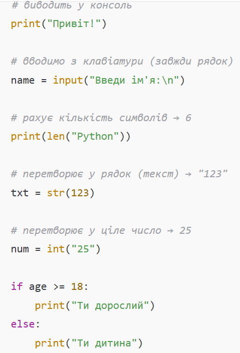
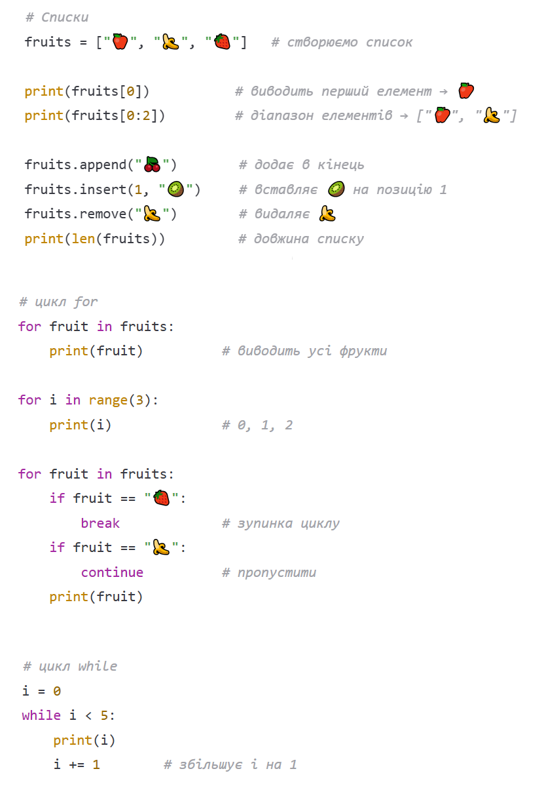
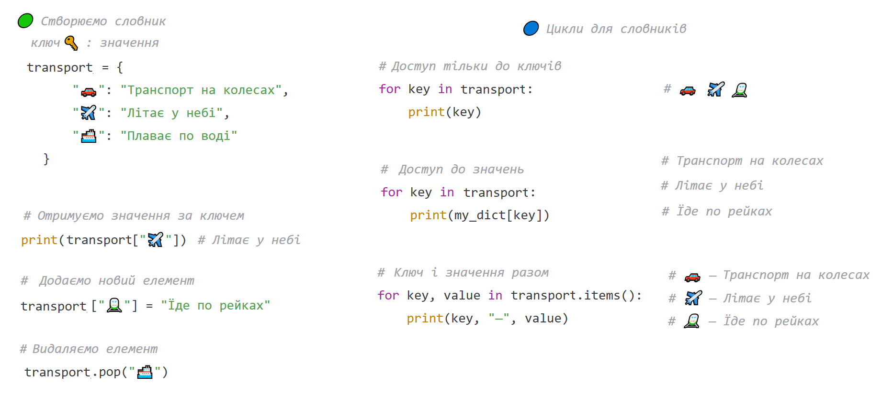
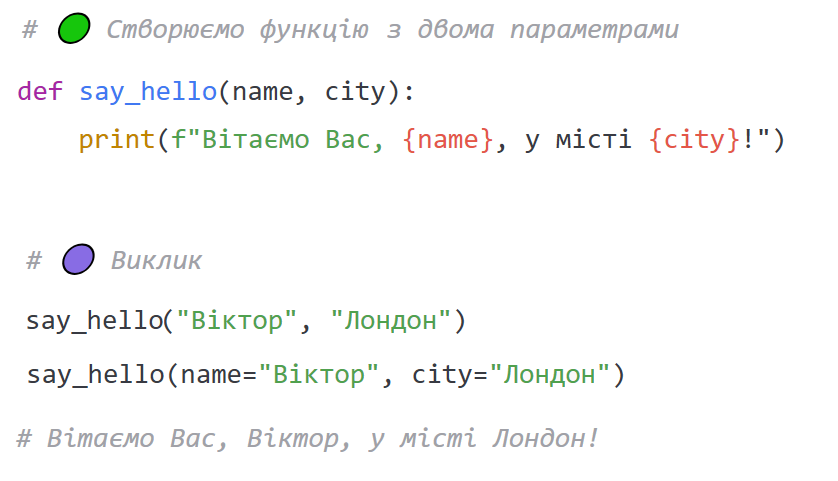
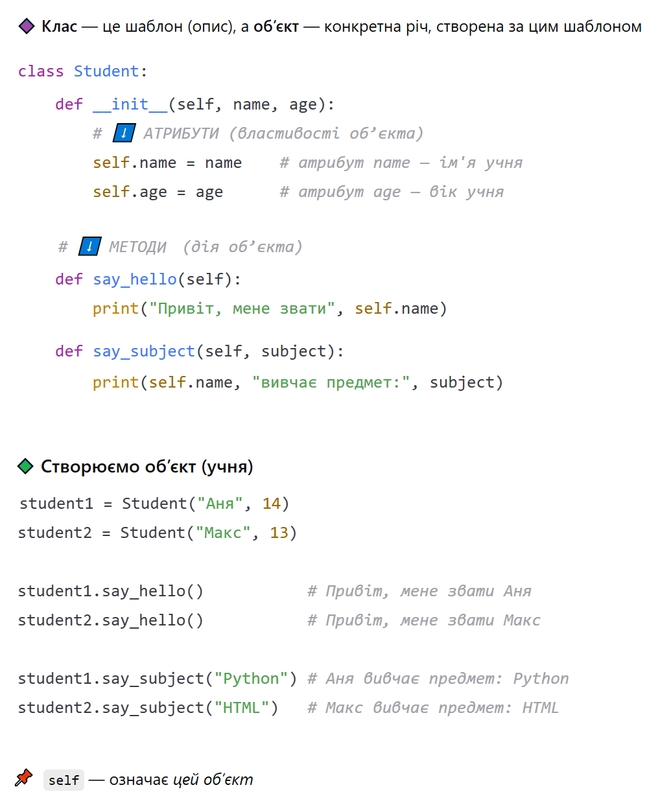
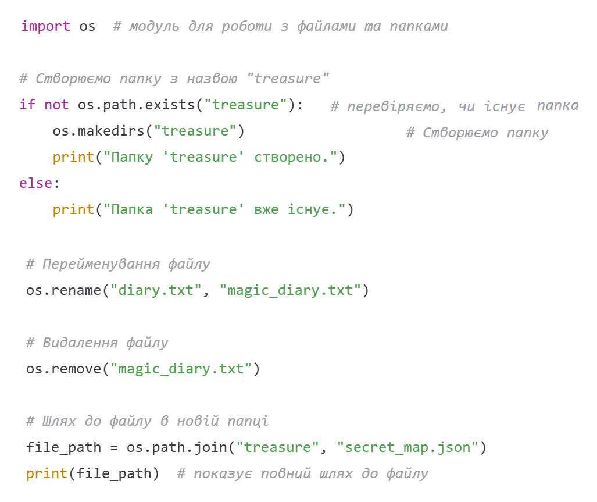
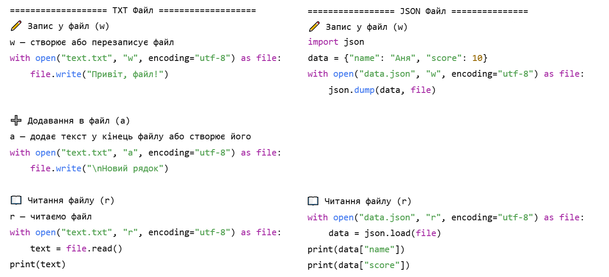
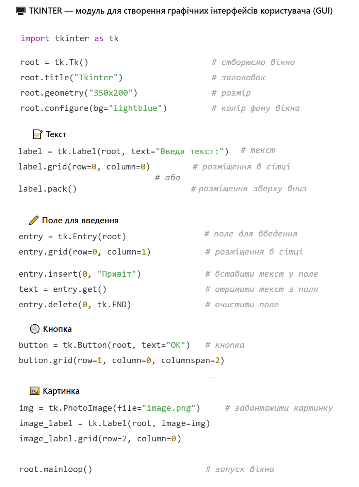
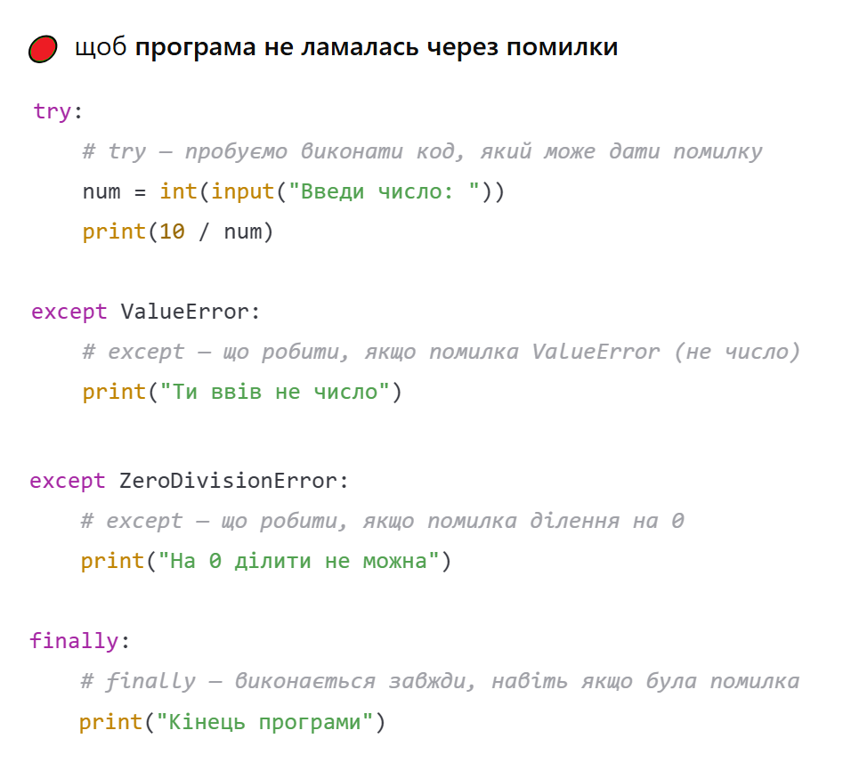

Створення прямокутника:
rect = pygame.Rect(100, 200, 50, 60)
Відмалювання у циклі:
pygame.draw.rect(screen, (255, 0, 0), rect)
100 — позиція по X
200 — позиція по Y
50 — ширина
60 — висота
(255, 0, 0) — червоний колір.
Якщо не потрібні колізії, рух або кліки — можна малювати фігуру прямо в циклі:
pygame.draw.rect(screen, (255, 0, 0), (100, 200, 50, 60))
Малювання кола:
pygame.draw.circle(screen, (0, 255, 0), (300, 200), 40)
(0, 255, 0) — зелений колір
(300, 200) — центр кола
40 — радіус
Малювання лінії:
pygame.draw.line(screen, (255, 255, 255), (100, 100), (400, 100), 5)
(255, 255, 255) — білий колір
(100, 100) — початок лінії
(400, 100) — кінець лінії
5 — товщина
Завантаження картинки та створення rect:
# завантаження картинки
player_img = pygame.image.load("player.png")
#додактово: щоб змінити розмір зображення
player_img = pygame.transform.smoothscale(player_img, (200, 150))
# створення rect
player_rect = player_img.get_rect()
# позиція
player_rect.x = 100
player_rect.y = 200
Властивості rect, які можна використовувати:
Відмалювання картинки:
screen.blit(player_img, player_rect)
Завантаження зображення фону:
background = pygame.image.load("background.png")
background = pygame.transform.scale(background, (WIDTH, HEIGHT))
Відмалювання фону у головному циклі гри:
screen.blit(background, (0, 0))
"background.png" — файл зображення фону
(WIDTH, HEIGHT) — розмір екрана гри
(0, 0) — малюємо фон у верхньому лівому куті
Перевірка зіткнення двох об’єктів:
if player_rect.colliderect(enemy_rect):
print("Зіткнення!")
Створення шрифту:
font = pygame.font.SysFont("arial", 36)
text = font.render("Привіт", True, (255, 255, 255))
"arial" — системний шрифт
36 — розмір тексту
Використання свого шрифту (потрібно завантажити в папку проєкту):
font = pygame.font.Font("myfont.ttf", 36)
text = font.render("Привіт", True, (255, 255, 255))
"myfont.ttf" — файл шрифту
36 — розмір
Відмалювання шрифту у головному циклі гри:
screen.blit(text, (10, 10))
keys = pygame.key.get_pressed()
Для постійних дій, в кожному кадрі гри.
Рух через стрілки:
if keys[pygame.K_LEFT]:
player_rect.x -= 5
if keys[pygame.K_RIGHT]:
player_rect.x += 5
Задаємо змінні (поза циклом гри)
gravity = 1 jump_speed = -15 velocity_y = 0 is_jumping = False
gravity — сила тяжіння (завжди тягне вниз)
jump_speed — сила стрибка (вгору)
velocity_y — вертикальна швидкість персонажа
is_jumping — перевірка, чи персонаж у стрибку
Основний цикл гри
# перевірка клавіш
if keys[pygame.K_SPACE] and not is_jumping:
velocity_y = jump_speed
# заборона подвійного стрибка
is_jumping = True
# гравітація
velocity_y += gravity
# оновлення позиції
player_rect.y += velocity_y
# перевірка "землі" (тут 300-позиція "землі")
if player_rect.y >= 300:
player_rect.y = 300 # ставимо на "землю"
velocity_y = 0
is_jumping = False # можемо стрибати ще раз
Простий рух ворога по осі X:
enemy_rect.x += enemy_speed
if enemy_rect.left < 100 or enemy_rect.right > 400 :
enemy_speed *= -1
Ворог рухається між двома межами і змінює напрямок.
enemy_speed - швидкість ворога, потрібно задати перед циклом (де завантажуєш зображення ворога)
if event.type == pygame.KEYDOWN:
if event.key == pygame.K_a:
print("Натиснули A")
Одноразові події, які не постіно повторюються
📌 Приклади:
перезавантаження гри
відкриття меню
вибір предмета
/ кнопки
взаємодія з об’єктом (відкрити двері, взяти предмет)
атака або постріл
1. Через події (event)
if event.type == pygame.MOUSEBUTTONDOWN:
print("Клік!")
Використовується для фіксації
моменту натискання (один клік).
Наприклад: меню, вибір об’єкта, постріл.
Кнопки миші:
1 — ліва кнопка
2 — середня
3 — права
if event.type == pygame.MOUSEBUTTONDOWN:
if event.button == 1:
print("Ліва кнопка")
2. Затискання кнопки
if pygame.mouse.get_pressed()[0]:
print("Ліва кнопка натиснута")
Використовується для тривалої дії: стрільба, утримання, перетягування.
[0] — ліва
[1] — середня
[2] — права
3. Позиція миші (одноразово, тут і зараз)
pos = pygame.mouse.get_pos() print(pos)
одноразове зчитування позиції миші “тут і зараз” ти просто отримуєш
координати (x, y) у будь-який момент
Використовується для наведення та вибору об’єктів.
4. Подія руху миші (перетягування / drag)
if event.type == pygame.MOUSEMOTION:
print(event.pos)
event.pos — позиція миші під час руху.
Приклад перетягування об’єкта:
dragging = False # чи тягнемо об'єкт
# Клік (схопили об’єкт)
if event.type == pygame.MOUSEBUTTONDOWN:
if event.button == 1:
if player_rect.collidepoint(event.pos):
dragging = True
#Рух миші (тягнемо)
if event.type == pygame.MOUSEMOTION:
if dragging:
player_rect.center = event.pos
#Відпустили кнопку
if event.type == pygame.MOUSEBUTTONUP:
if event.button == 1:
dragging = False
Об’єкт “прилипає” до миші і рухається разом з нею.
if event.type == pygame.MOUSEBUTTONDOWN:
if player_rect.collidepoint(event.pos):
print("Клік по гравцю")
Де використовується:
• клік по персонажу
• вибір предметів
• кнопки в грі
• інвентар
• інтерактивні об’єкти (двері, сундуки, меню)
1. Запуск таймера (поза циклом)
start_time = pygame.time.get_ticks()
Запам’ятовує час старту гри в мілісекундах.
2. Розрахунок часу (в циклі гри)
current_time = pygame.time.get_ticks() seconds = (current_time - start_time) // 1000
Показує, скільки секунд пройшло з початку гри.
Кожне натискання створює нову кулю
if event.type == pygame.KEYDOWN:
if event.key == pygame.K_SPACE:
# створюємо копію прямокутника кулі
bullet = bullet_rect.copy()
# тут вказуємо початкову позицію кулі
bullets.append(bullet)
Рух куль у циклі
for bullet in bullets:
bullet.x += 10
3. Видалення куль (якщо виходять за екран)
for bullet in bullets[:]:
if bullet.x < 0 or bullet.x > 800:
bullets.remove(bullet)
bullets[:] — це копія списку.
Вона використовується, щоб не пропустити елементи під час циклу.
Оскільки з оригінального списку деякі кулі вже можуть бути видалені,
то номерація збивається.









Створення простого сервера:
from flask import Flask
app = Flask(__name__)
@app.route("/")
def home():
return "Hello Flask!"
if __name__ == "__main__":
app.run(debug=True)
@app.route("/about")
def about():
return render_template("about.html")
Файл about.html лежить у папці templates
class User(db.Model):
id = db.Column(db.Integer, primary_key=True)
name = db.Column(db.String(100), nullable=False)
primary_key=True — це унікальний ідентифікатор запису (ID)
nullable=False — поле ОБОВ’ЯЗКОВЕ (не може бути пустим)
users = User.query.all()
user = User.query.get(1)
1 — це id користувача
Session зберігає дані між сторінками
from flask import session session["name"] = "Руслана"
name = session.get("name")
session.clear()
session["name"] — записує дані
session.get() — безпечне отримання
session.clear() — очищення
<ul>
{% for student in students %}
<li>{{ student.name }} — {{ student.score }}</li>
{% endfor %}
</ul>
Тут student — це об’єкт (словник)
доступ через student.name, student.score
{% if student.score >= 60 %}
<p style="color:green;">Здано</p>
{% else %}
<p style="color:red;">Не здано</p>
{% endif %}